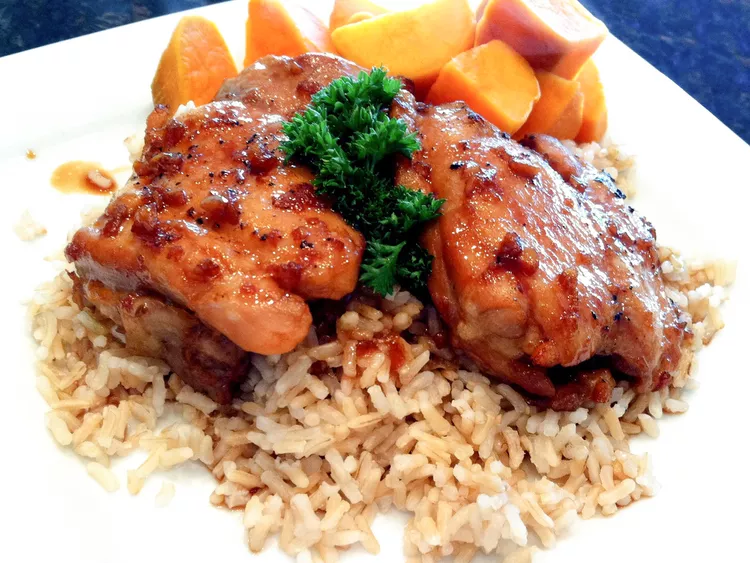

Grilled Chicken Adobo

Description
A delicious and easy-to-make Filipino chicken dish made with soy sauce, garlic, and vinegar. You can multiply the number of chicken in this recipe to serve for a larger party (if you have friends) Best served with rice and some soy sauce (if you want more sodium. just be sure to drink some too big).
Ingredients
- 1 ½ cups soy sauce
- 1 ½ cups water
- ¾ cup vinegar
- 3 tablespoons honey
- 1 ½ tablespoons minced garlic
- 3 bay leaves
- ½ teaspoon black pepper
- 3 pounds skinless, boneless chicken thighs
Steps
- Preheat an outdoor grill for high heat, and light oil grate. If you live in San Francisco, good luck.
- In a large pot, mix soy sauce, water, vinegar, honey, garlic, bay leaves, and pepper. Bring the mixture to a boil, and place the chicken into the pot. Reduce heat, cover, and cook 35 to 40 minutes.
- Remove chicken, drain on paper towels, and set aside. Discard bay leaves. Return the mixture to a boil, and cook until reduced to about 1 ½ cups.
- Place chicken on the prepared grill (or wherever you have very high heat), about 5 minutes on each side, until browned and crisp. Serve with the remaining soy sauce mixture.